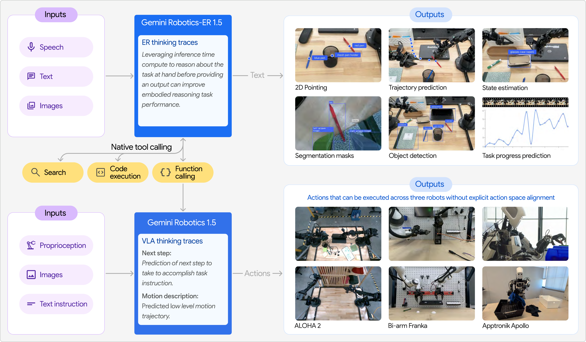
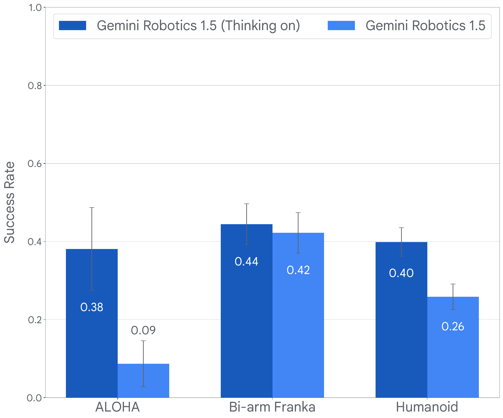
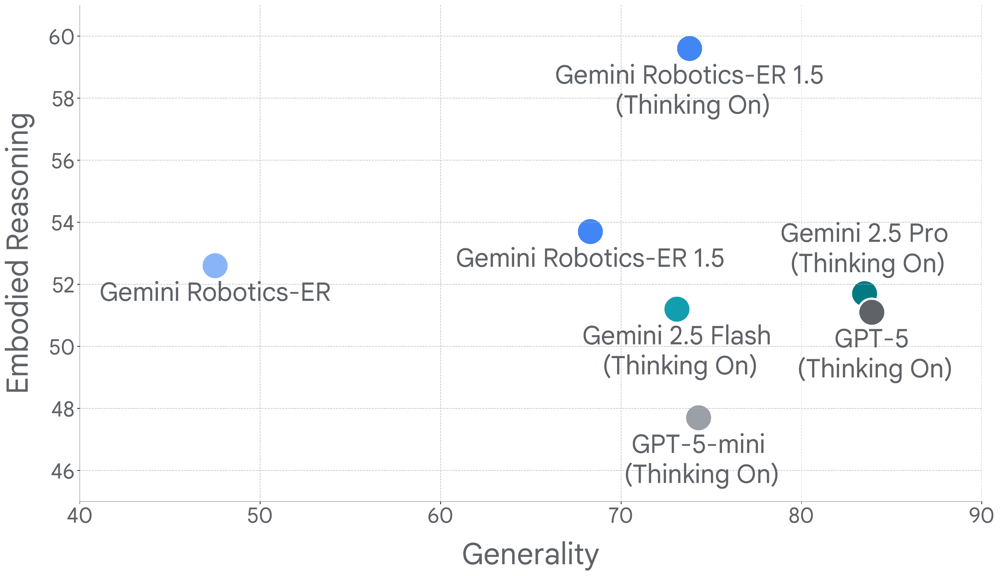
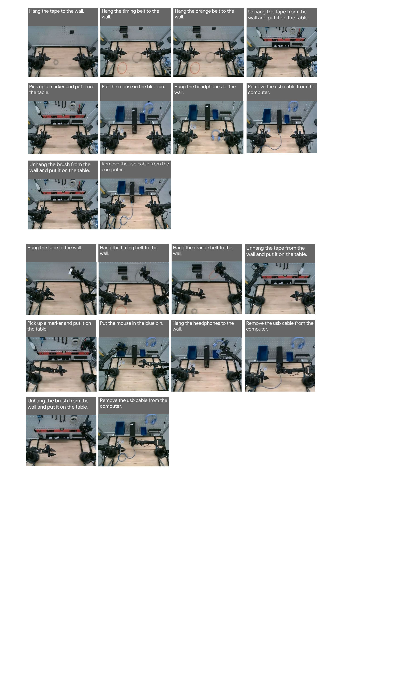

🔵 Problem & Motivation
What Does a Generalist Robot Need?
- Deep physical world understanding: spatial reasoning, temporal reasoning, intuitive physics, affordances
- High-level reasoning: decompose complex multi-step tasks, adjust plans during execution
- Cross-body generalization: work across different robot morphologies without per-robot fine-tuning
Limitations of Gemini 1.0
- Lacked explicit Thinking capability
- Limited cross-body generalization
- Unable to perform complex embodied reasoning
Core Motivation
Bring Gemini's Thinking capability into the physical world — so robots can not only execute actions but also "think" about their actions.

Fig. 1: Gemini Robotics 1.5 System Overview — two core components: GR-1.5 (Thinking VLA) and GR-ER 1.5 (Embodied Reasoning Model)
VLA
Motion Transfer
Thinking VLA
Embodied Reasoning
🔵 Core Methods
GR-1.5: Motion Transfer
Learning unified motion and physical understanding from heterogeneous, multi-body robot data:
- Multi-body pretraining: ALOHA, Bi-arm Franka, Apollo humanoid, and more
- Zero-shot skill transfer: trained on one robot, transferred zero-shot to another
- MT amplifies positive transfer: aligning commonalities across bodies
GR-1.5: Thinking VLA
Interleaving thinking and action with multi-layer internal reasoning in natural language:
- Observe → Think → Act iterative loop
- Decompose complex tasks into concrete short-horizon steps
- Self-correction: automatically recover after detecting failures
- Interpretability: visualize robot's thought trajectories

Fig. 2: Thinking VLA success rate on multi-step tasks — enabling Thinking significantly outperforms baseline methods
GR-ER 1.5: Embodied Reasoning
- Complex Pointing: predict point sets (not single points), generate motion trajectories
- Progress Understanding: predict task completion percentage, detect success/failure
- Multi-view Understanding: synthesize multiple camera perspectives
- Thinking Scaling: automatically allocate appropriate thinking budget per task

Fig. 3: GR-ER 1.5 performance on embodied reasoning tasks — comprehensively surpassing Gemini 2.5 and GPT-5
🟢 Experimental Results
GR-1.5 Multi-Body Generalization (230 tasks)
| Generalization Type | Description | Effect |
|---|---|---|
| Visual | Resist background/lighting/texture changes | Major gains |
| Instruction | Paraphrase/multilingual/vague instructions | Major gains |
| Action | Adapt to new initial conditions/object instances | Major gains |
| Task | New environments + new tasks (most comprehensive) | Major gains |
Zero-Shot Cross-Body Transfer
- ALOHA → Bi-arm Franka: successfully executes tasks trained only on Franka data
- Bi-arm Franka → ALOHA: successfully executes tasks trained only on ALOHA data
- Other robots → Apollo: significant morphology differences yet still effective transfer

Fig. 4: Cross-body zero-shot transfer benchmark — GR-1.5 significantly outperforms all baselines on ALOHA, Omega, and Atari platforms
GR-ER 1.5 Embodied Reasoning
| Task | GR-ER 1.5 vs. SoTA |
|---|---|
| Average Pointing | New SoTA |
| Spatial Pointing | Surpasses Gemini 2.5 |
| Steerable Pointing | Surpasses GPT-5 |
| Point-to-Count | New SoTA |
| Success Detection | Strong @ 5Hz multi-view |
Thinking Scaling
GR-ER 1.5 exhibits Thinking scaling on embodied reasoning: image/video QA tasks benefit from longer thought traces (peak 3072 tokens), pointing tasks require less reasoning (peak 2048 tokens), and the model automatically allocates appropriate thinking budget per task.